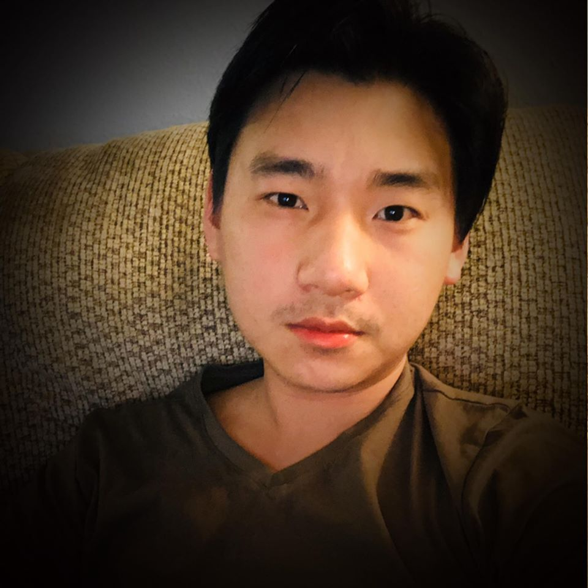
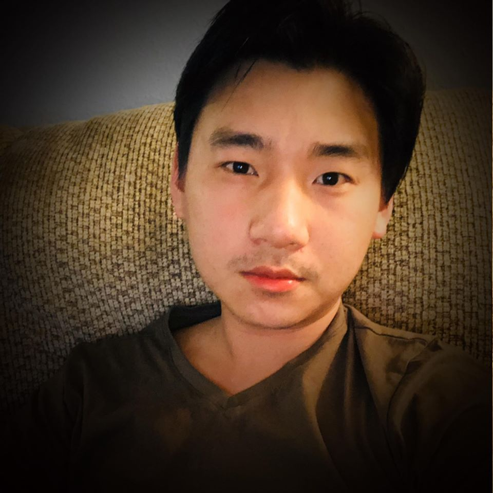

About Me


Hello there, welcome to my page. I was born in Fresno, California
on October 14, 1995. I am currently attending Saint Paul College
to pursue my AAS degree in computer programming. I have hobbies such as
tennis, volleyball, singing, guitar, cooking, photography and fishing.
My life goals is to become knowledgable in the computer field. I have been
interested in the field and find it as a challenge to pursue the field.
What I am most interested in is coding and I am hoping to make
a big project in the future.